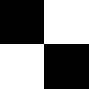

In your worlds, you may want to create an infinite floor plane, stretching off in all directions as far as the user can travel. This workshop is going to go through the stages of creating such a surface, and then making sure the texturing works right.
First, imagine you have a world, in which there are a number of objects, and a floor plane. For the purposes of this workshop, we're going to work with a flat floor plane made out of a simple Box node. You can make more complex floors easily with the ElevationGrid node, but they will be more complex to make infinite. For the moment, let's assume we want a world with a flat floor plane.
'Simple!' you may shout, I'll just create a huge Box that extends further than the user will ever want to go. Well, there are a couple of disadvantages to that approach:
There has to be a better way, so let's start thinking about it. First of all, let's create a simple world to try out our ideas on. We'll have a small ground plane, about 100 metres square, with a checkered texture on. We'll also have a few structures in the world, to give us an idea of how everything's moving. Take a look at this first world and its code, and get familiar with its layout and content.
The structures are just Spheres, and the floor is just a Box. The texture is done with a single black & white checkered 128x128 PNG file, as shown below, but scaled down with a TextureTransform. The image is 128x128 because it's always a good idea to keep texture sizes to a power of 2. The hardware prefers it that way, apparently.

OK, now we have our world, how are we going to improve it? Well, the first problem is that the user can walk off the edge of the floor. This is no good at all in an infinite floor, is it? So, what can we do. Well, we use the same technique as we used for the heads-up display, for making stuff move with the user, with a slight modification. If you haven't read the HUD workshop, have a read now, you'll need to understand what's going on.
As for the HUD, we first of all need to detect the user's position in the world. This then needs to be fed into a Transform governing the position of the user-following geometry, in this case the floor. So, we add a ProximitySensor that follows the user, as explained in the previous workshop. However, we don't want the normal HUD behaviour exactly. When the user moves, we want the floor to follow him in the X and Z directions, but not the Y. So, we can't use the position_changed eventOut from the sensor to feed directly into the Transform, we have to add a little bit of scripting. We're also not going to bother dealing with the orientation of the user, as it turns out not to be necessary in the end. So, we need a script that removes the Y component of an SFVec3f event. This is fairly simple...
DEF FLOORPROC Script {
eventIn SFVec3f set_position
eventOut SFVec3f translation_changed
url "javascript:
function set_position(value,time) {
translation_changed.x = value.x;
translation_changed.z = value.z;
}
"
}
This piece of code simply makes a new vector with the same X and Z values, but a Y value of 0. So, whenever the user moves, the floor will move with him, staying at the same Y position but moving in X and Z. Now we have all this in place, take a look at the second world and its code. In the code, notice the large ProximitySensor, the Script and the ROUTEs that have been added. In the world itself, notice how the floor moves with the user, even when the user moves up into the air.
Now, we have something of a strange effect here. The floor moves with the user, creating an infinite surface, but the texture does not. Also, we can still see the edges of our small piece of floor. We'll deal with these now. First, we add a Fog node to disguise the edge of the Box. If you don't want to do this, you could use a Cylinder instead of a Box to get rid of the visible corners. However, using fog also removes nasty aliasing effects of the floor texture. If you look at the first world, you'll see some nasty effects towards the edge of the Box as you move around; the fog obscures these, making your world more realistic. Now for the texture.
Notice that the TextureTransform we're using has a translation field, which takes a 2D translation for the texture on the surface. We could probably feed the same translation information (with a bit of processing) into the TextureTransform as we fed into the main floor Transform. Our updated script looks like this:
DEF FLOORPROC Script {
eventIn SFVec3f set_position
eventOut SFVec3f translation_changed
eventOut SFVec2f textureTranslation_changed
url "javascript:
function set_position(value,time) {
translation_changed.x = value.x;
translation_changed.z = value.z;
textureTranslation_changed.x = value.x / 100;
textureTranslation_changed.y = -value.z / 100;
}
"
}
We need to invert the Z value, because of how we've positioned our box, and divide each component by 100 to allow for the fact that the texture is mapped onto an area that is 100 by 100 before being scaled down.
Now that you understand that, take a look at the final world in our sequence, and its code. Notice the expanded script, the DEF name for the TextureTransform and the extra ROUTE. In the world, see how the texture appears to stay still as the user moves. You can check this by going up to one of the spheres and walking around it very slowly. You will see that the texture stays perfectly still relative to the real-world objects, giving a perfect illusion of an infinite, seamlessly-textured plane.